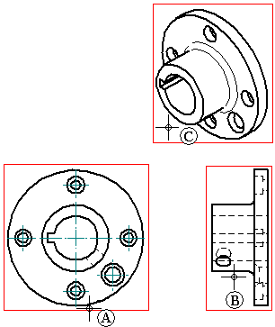

Principal views
Creating principal views
After you place the initial drawing views on the drawing sheet using the Drawing View Wizard, you can use the Principal View command to create additional orthogonal or pictorial drawing views using an existing drawing view.
You specify the orientation of the new drawing view using the cursor. For example, to place a new principal view using an existing orthogonal view, first select the source view (A), then position the cursor to the right, left, top, or bottom to place a new orthogonal view (B), or position the cursor diagonally to place a new pictorial view (C).

When you use the Principal View command to place new drawing views, they are aligned with and are placed at the same scale as the source view.
Principal view captions
The default principal view caption content and formatting is defined in the drawing view style that is selected on the Principal View command bar when you create the view.
After you place a principal view, you can use the Show Caption options on the Drawing View Selection command bar to show or hide the caption text. You also can modify the caption using the Caption tab (Drawing View Properties dialog box).
You can reposition a caption by selecting the view and then dragging the label to a new location.
To learn more, see the following Help topics: